Quatsch
Randalf
Das Stickerarchiv für den lila Krachbeauftragten. Hier landet alles, was Randalf irgendwo auf der Seite anstellt, daneben kommentiert oder ungefragt verschlimmbessert.
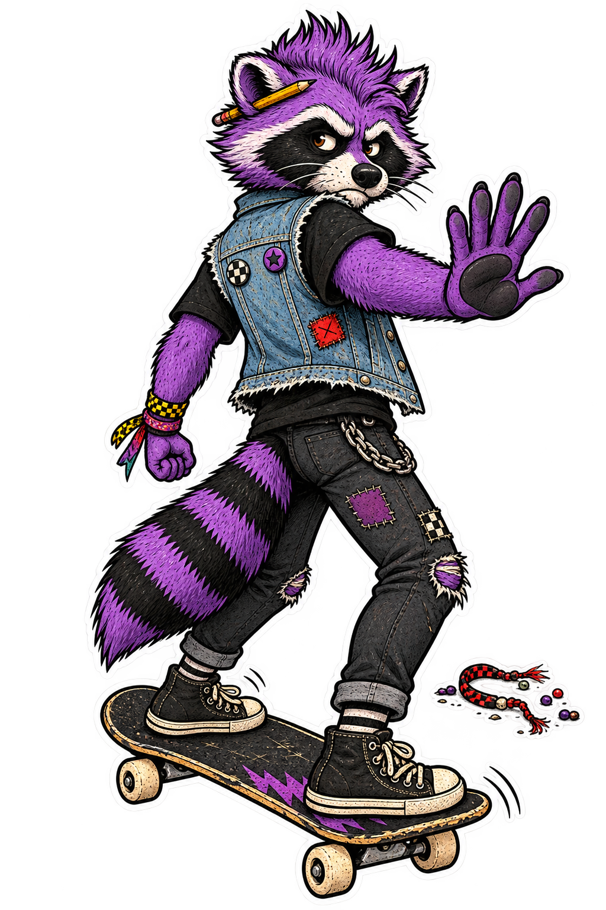
Never Again
Randalf kennt keine zweite Chance. Das Skateboard darf bleiben, das Freundschaftsband nicht.
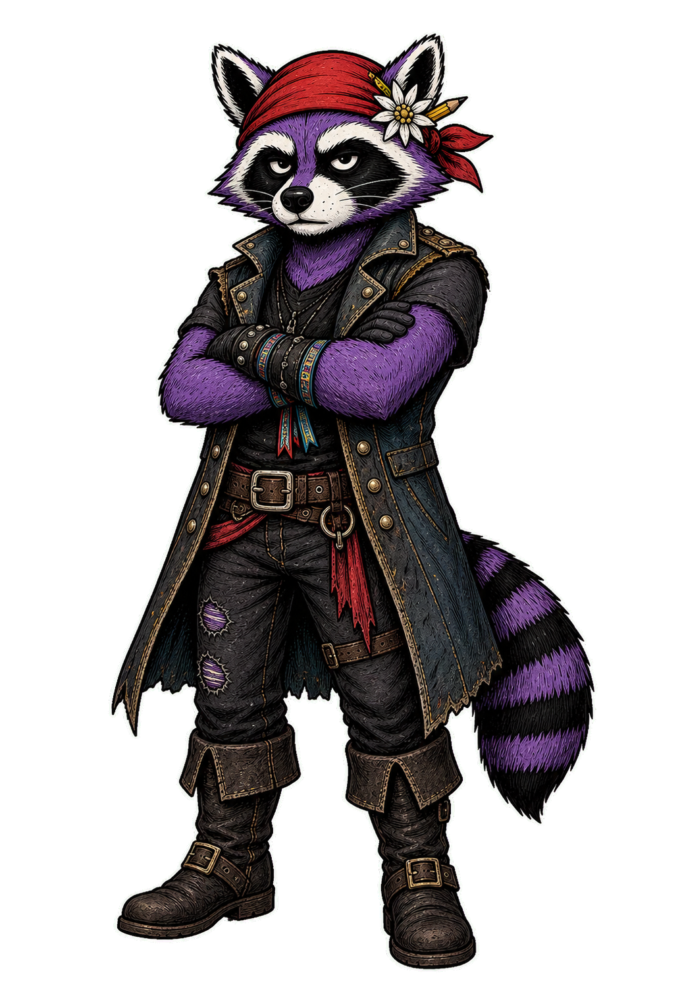
Wir sind der Widerstand!
Randalf verschränkt die Arme. Das Edelweiß bleibt trotzdem hinterm Ohr.
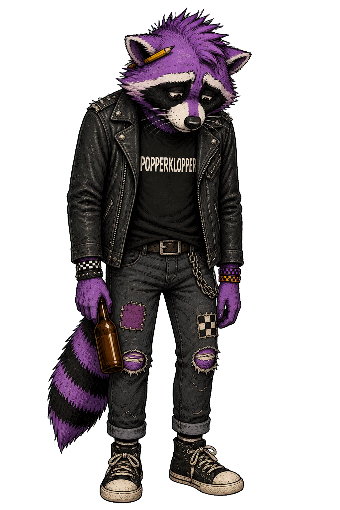
Nicht allein
Randalf lässt den Kopf hängen. Die Bierflasche hat heute auch keine schlaue Antwort.
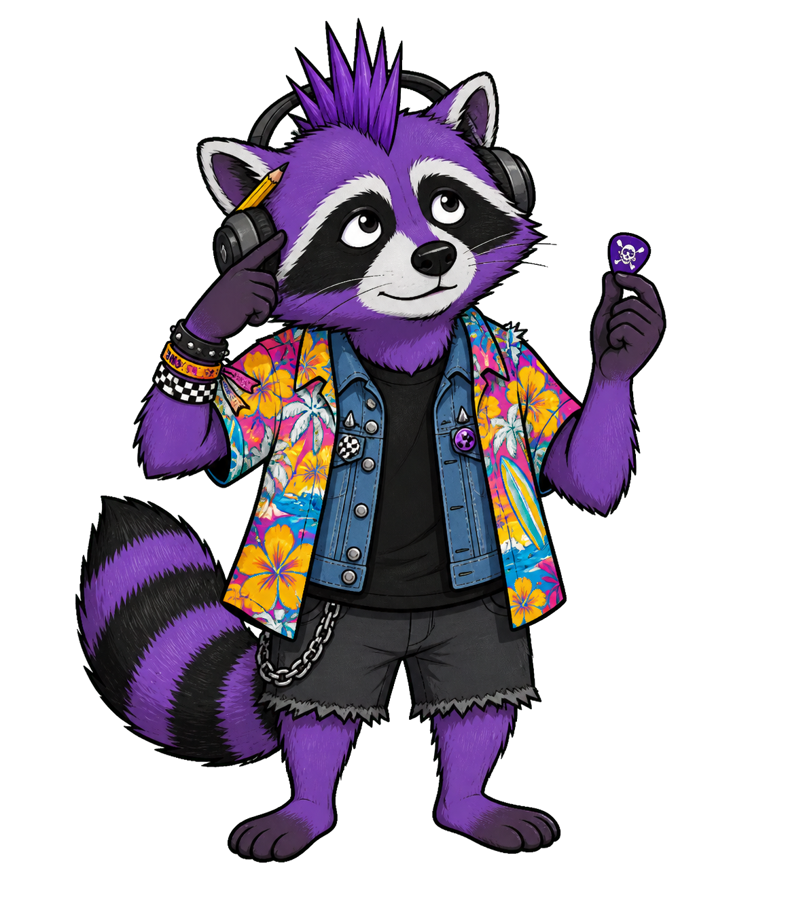
In My Head
Randalf hört Aloha Caddies und versucht, seinen Kopf nicht sofort in Mad-Caddies-Schubladen aufzuräumen.
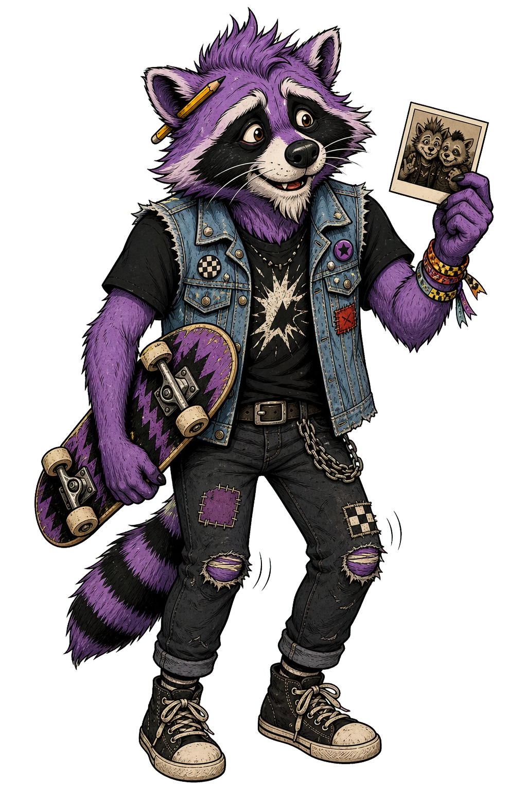
Second Half
Randalf ist im Kopf wieder zwanzig, hält das Skateboard fest und merkt erst beim Aufstehen, dass Nostalgie keine Knie schmiert.
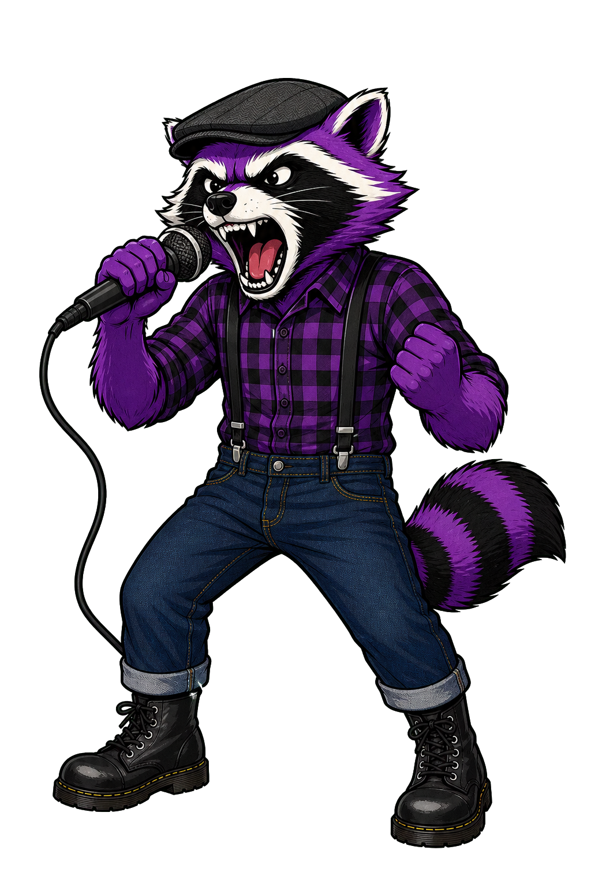
Antifascist till we die
Randalf hat die Schiebermütze auf und brüllt Oi! dahin, wo Grauzonen lieber nicht stehen sollten.
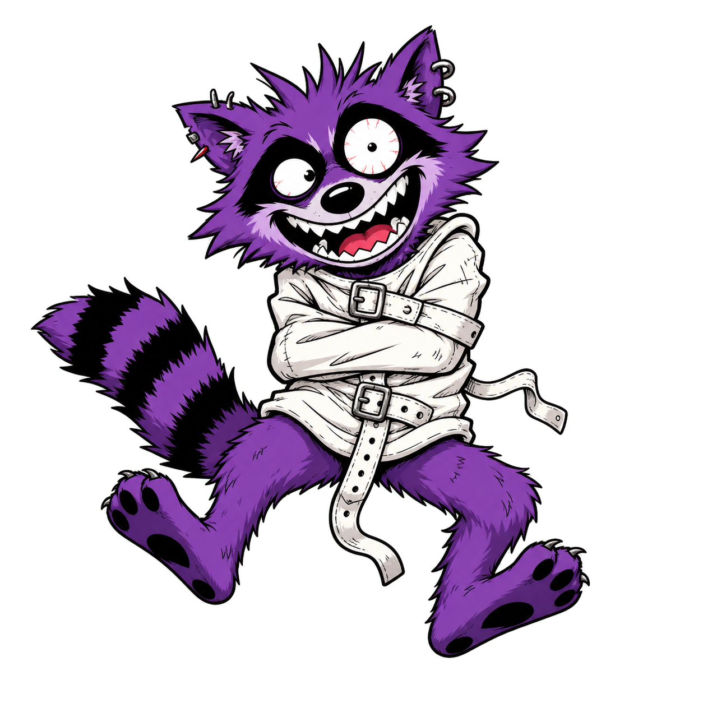
Tanze Samba mit mir
Randalf steckt in der Zwangsjacke und schaut so, als hätte jemand gerade Mad Dog Dan auf Zimmerlautstärke gehört.
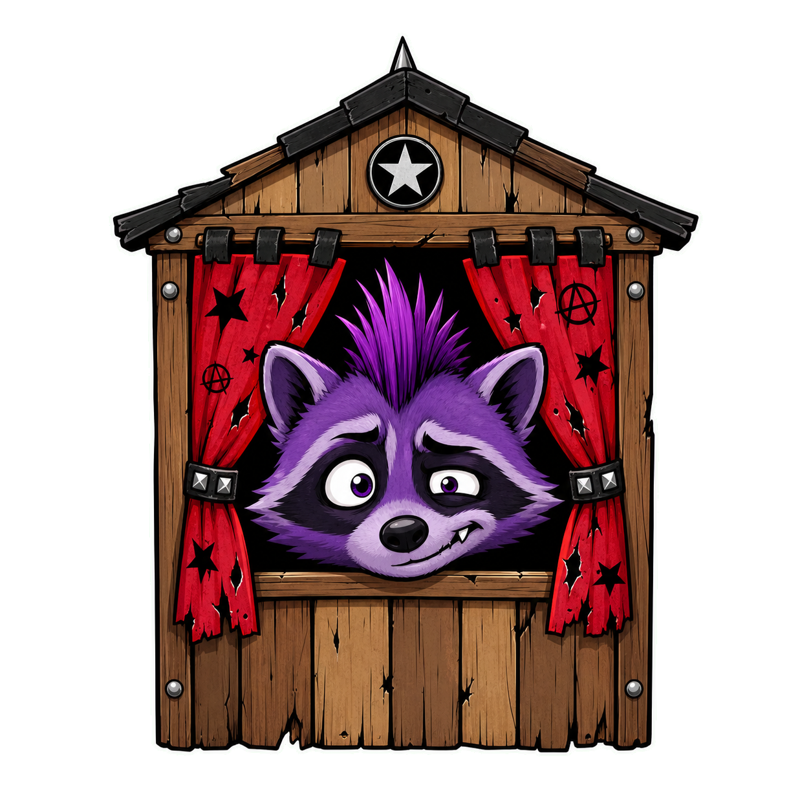
Seid Ihr Wirklich so Zufrieden
Randalf steckt im Puppentheater und schaut so, als hätte jemand gerade klassischen Punkrock bestellt.
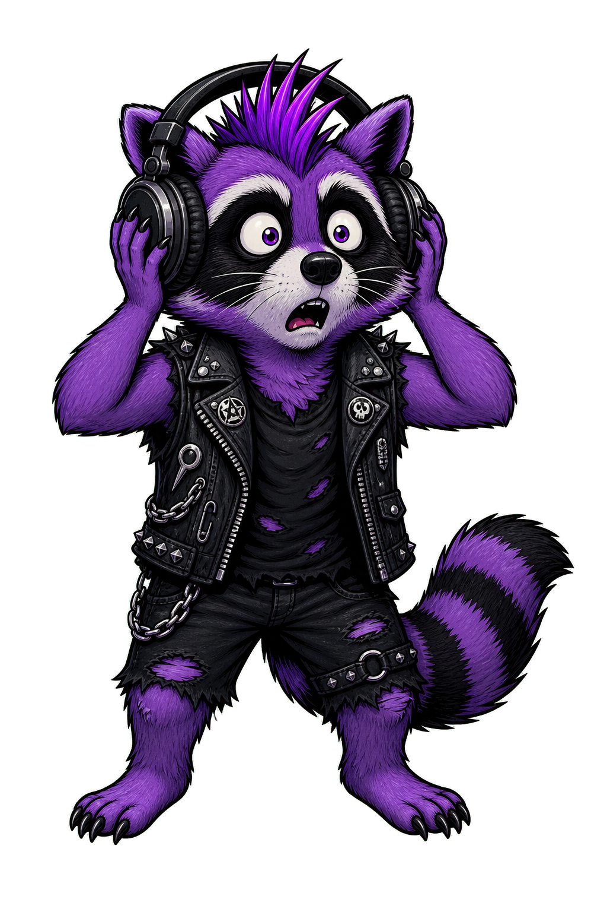
Unbound
Randalf wollte nur kurz reinhören und hält jetzt fasziniert verstört die Kopfhörer fest.
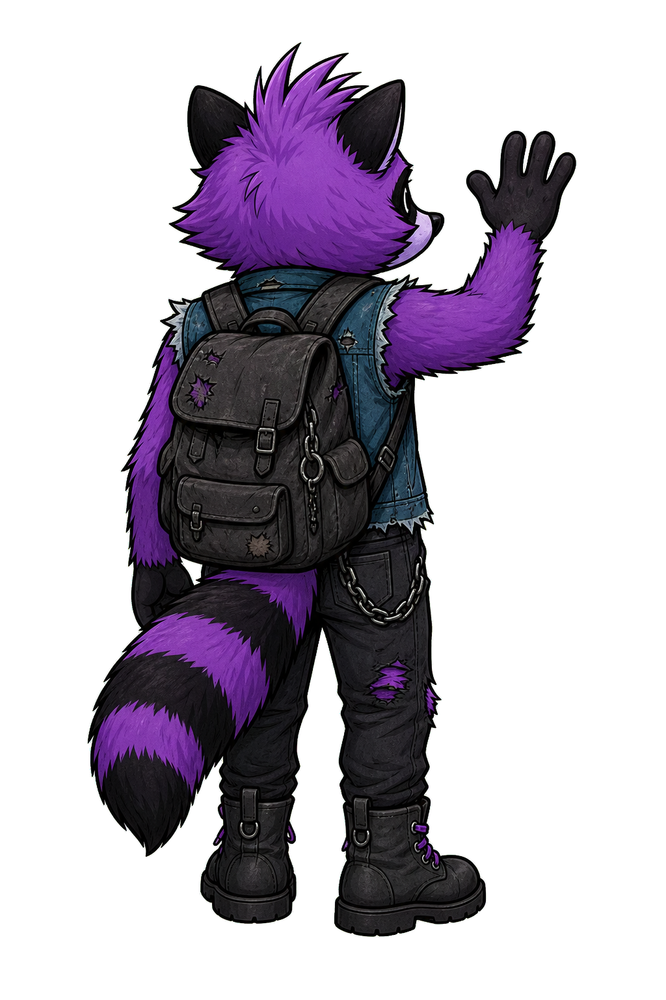
Ich will los
Randalf hat den Rucksack gepackt und winkt. Ob er wirklich losgeht oder nur dramatisch tut, bleibt offen.
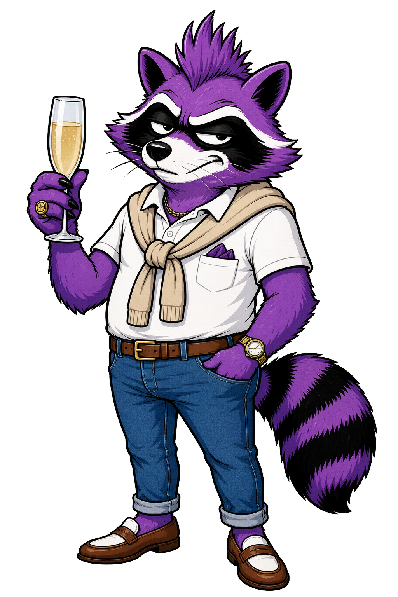
Sag Ja
Randalf hat kurz Wohlstand inhaliert und hält jetzt Sektglas und Arroganz für Charakterbildung.

Der dicke Polizist
Satirischer Dienststicker aus dem RandaleFUNK-Ticker.

Punk-Rock-Meuterei
Enterseil, Bierflasche, schlechte Idee. Randalf nimmt Kurs auf Neustadt.

Here We Go
Piratenhut, Banjo, Pub-Pegel. Randalf hat den Refrain schon vor dem zweiten Pint verloren.

Pianomann
Randalf am Klavier. Vermutlich gegen seinen Willen musikalisch.

Gewaltenteilung
Arme verschränkt, Gesicht verdeckt, schlechte Laune ordnungsgemäß angemeldet.

Kein Zurück
Rebellisches Baby auf Rollen. Rückendeckung statt Fernbedienung.

Champagner Punx
Randalf erledigt, was mit Perlweinflaschen auf Punkkonzerten eben erledigt werden muss.

Germaniac!
Dudelsack in der Hand, Panik im Blick. Celtic Punk als Atemnot-Praktikum.

Durst nach Freiheit
Akustikgitarre, Himmelsgejaule und genug Lagerfeuerdrama für kalte Hände.

Hinlänglich bekannt
Trompete verstopft, Kopf kurz vor Bratwurstland-Überdruck.

Halt die Fresse
Randalf merkt zu spät, dass manche Sätze besser im Mund bleiben.

Sabotage
Randalf hat die dritte Runde erreicht und natürlich vorher nicht gedehnt.

Fresse auf!
Randalf hat eine Meinung und leider auch die passende Lautstärke dazu.

Dagegen
Randalf ist gegen Fisch, gegen Platte und gegen Entscheidungen.

Absolut kein Punk
Randalf hat die Feinabstimmung gefunden und möchte sie zerschlagen.

Skate or Die
Randalf hat gerade wieder zu viel Zeit in den Neunzigern verbracht.

Letzter Versuch
Randalf hat Gefühle gefunden und macht daraus sofort Krach.

Sie
Randalf wollte nur einkaufen und landete im Hundertjährigen Krieg.

Kauf das jetzt!
Randalf hat die Tonlage gefunden, die garantiert niemand gesucht hat.

BWLer
Randalf wollte nur cool landen. Der Boden hatte andere Pläne.
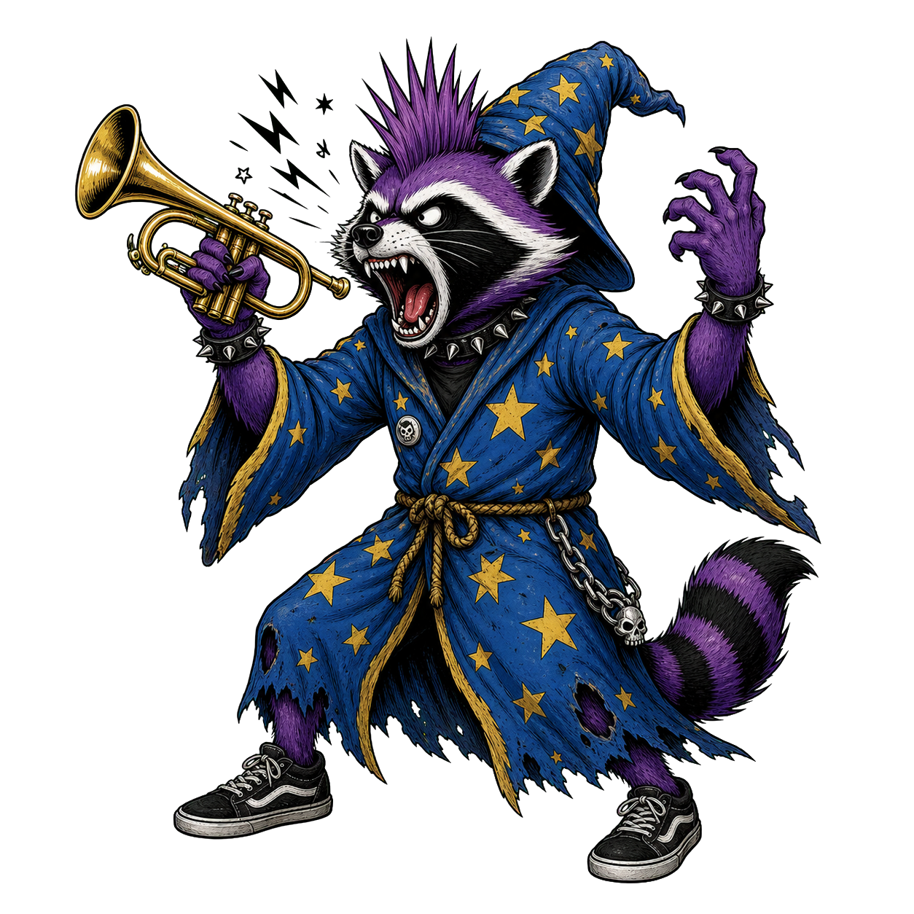
Order of Priorities
Randalf hat Magie gelernt und nutzt sie sofort gegen Bläser.
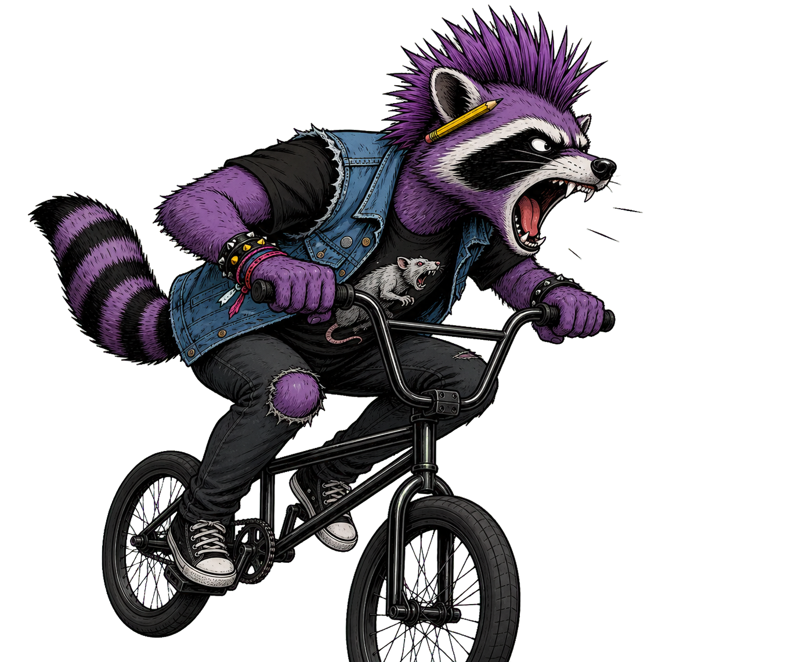
High Life
Randalf hat ein BMX gefunden und verwechselt Vorfahrt mit Ansage.
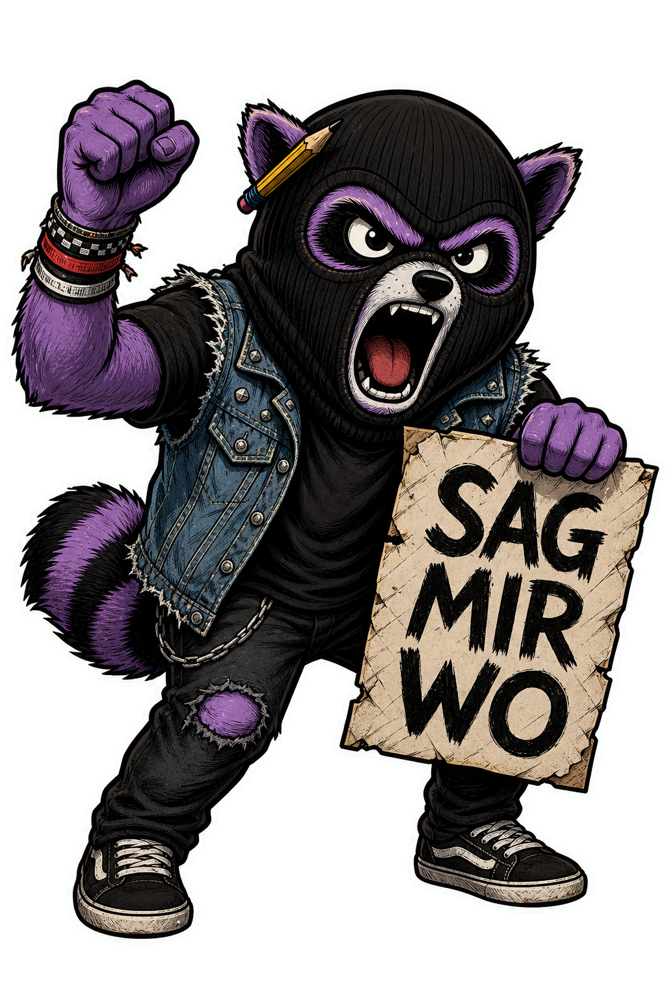
Sag mir wo
Randalf hat die Wut gefunden. Diesmal sogar mit Schild.
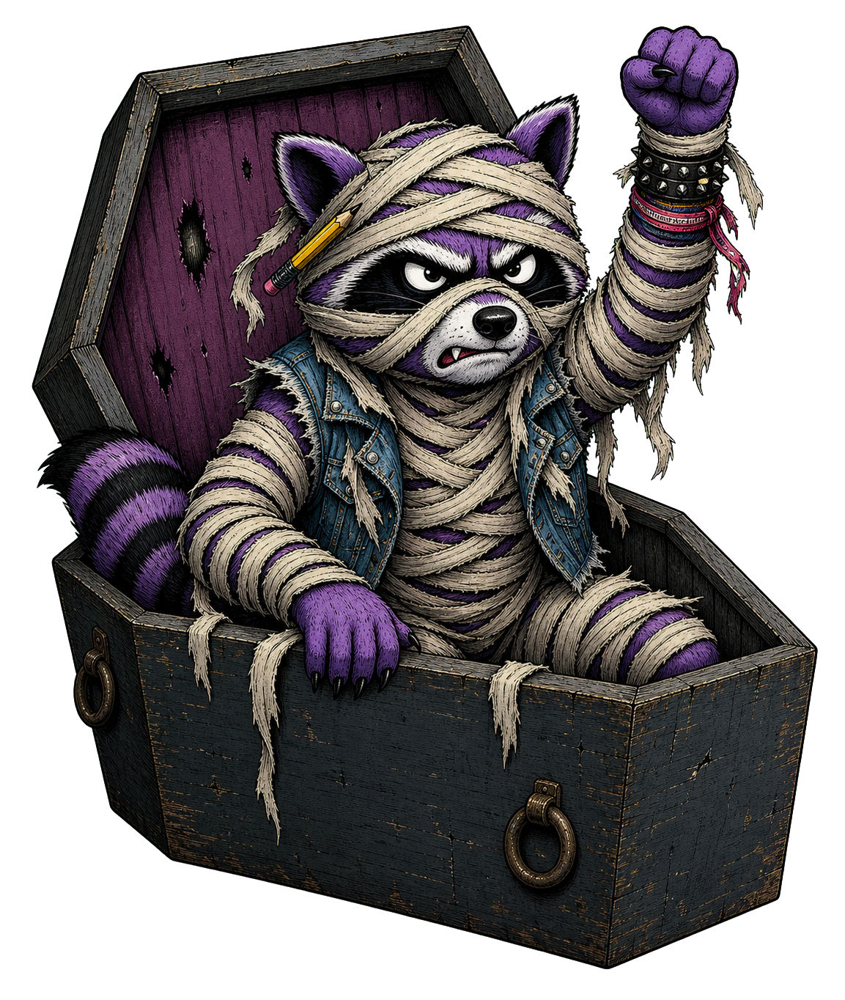
I'm Never Gonna R.I.P.
Randalf wurde schon wieder abgeschrieben. Randalf widerspricht.
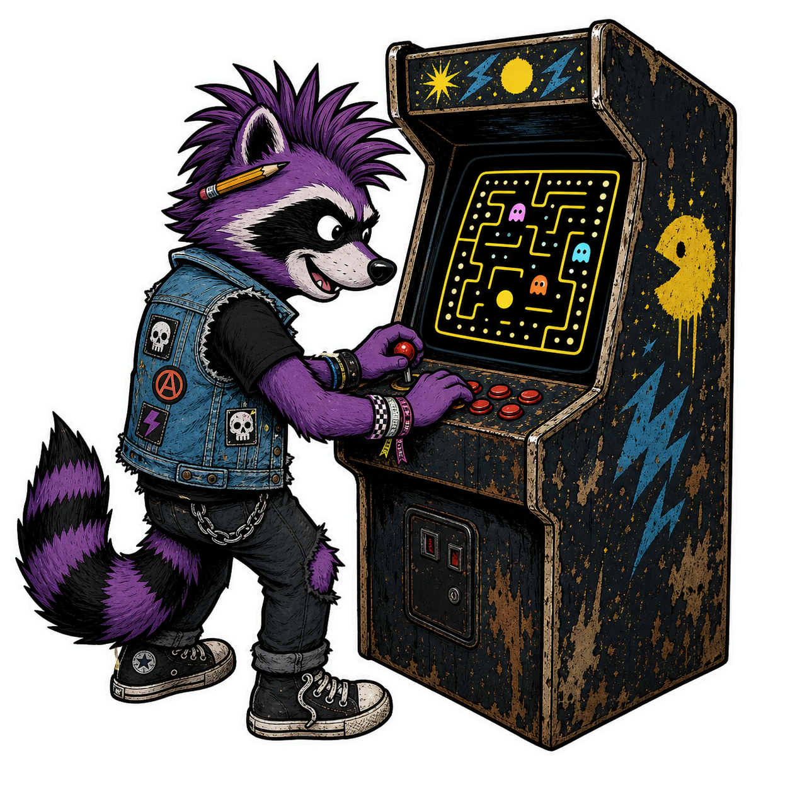
Flawed From The Get-Go
Randalf wollte nur eine Runde spielen. Jetzt hängt der Refrain im Automaten fest.
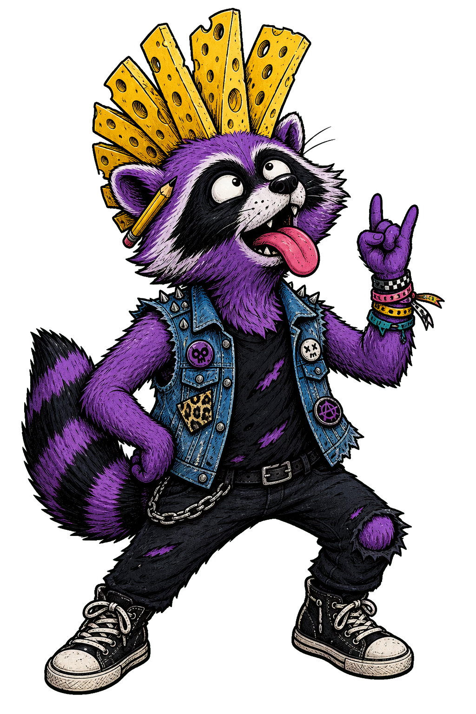
Macht kaputt
Randalf hat Punk verstanden. Und Käse. Beides gleichzeitig war ein Fehler.
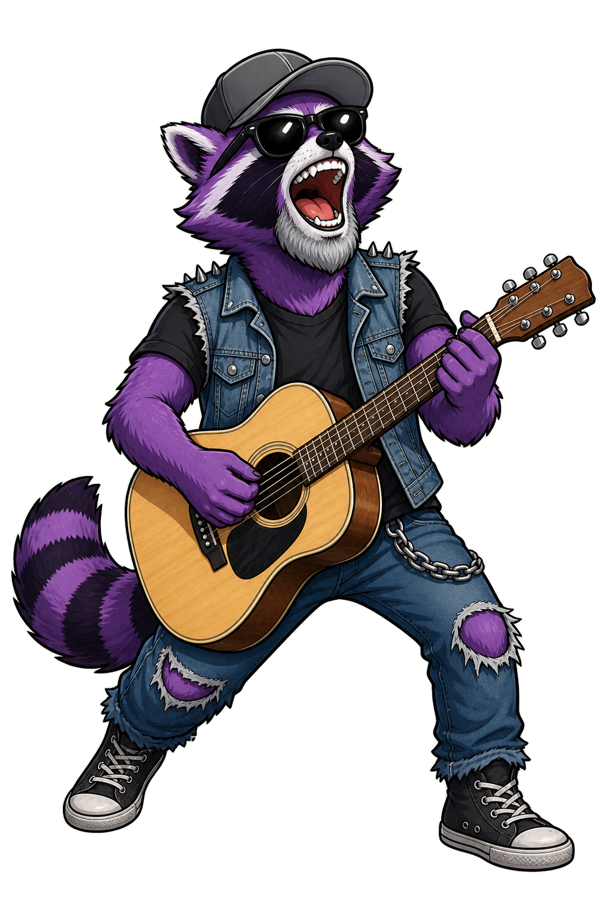
I Won't Lie Down
Randalf entdeckt akustische Gefühle und versucht, sie einfach lauter zu schreien.
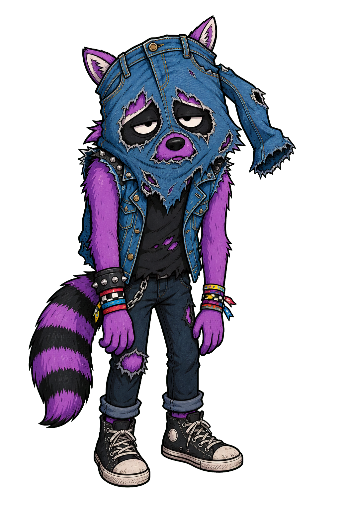
Komplett im Arsch
Randalf zieht sich die Jeans über den Kopf. Manchmal ist das die vernünftigste Reaktion.